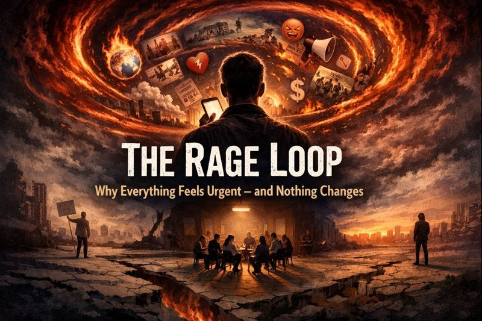

“The most common way people give up their power is by thinking
they don’t have any.”
— Alice Walker
Most days start or end the same way.
You open your phone. You scroll. Within minutes, you see something infuriating: a bad idea being rewarded, an unjust outcome, something broken being normalized yet again.
You feel the spike. The familiar heat. Maybe you like a post condemning it. Maybe you repost it with a comment. Maybe you write something yourself.
Then you move on.
And nothing changes.
We’ve never been more informed, more opinionated, or more emotionally activated — and we’ve never been less capable of actually stopping the things that enrage us.
That gap is exhausting. And it isn’t a personal failure.
“We do not rise to the level of our expectations. We fall to the
level of our training.”
— Archilochus
Rage is everywhere because rage is efficient. Rage captures attention, and sells ads.
It’s fast. It’s emotionally vivid. It provides instant moral clarity: this is wrong, and I’m not wrong for seeing it. Platforms reward it because it keeps attention moving without ever resolving anything.
Rage feels like motion — but it doesn’t move the world.
It releases emotional pressure without creating external pressure. You feel lighter. Aligned. Engaged. Then the feeling fades, replaced by the next provocation.
Over time, this trains a reflex: see problem, feel outrage, post about it, move on.
What it does not train is coordination, follow-through, or shared responsibility.
“Action without coordination is noise.”
— Peter Drucker
Posting feels productive because it resembles action at a neurological level. Expression releases tension. Agreement creates belonging. Visibility mimics impact.
But expression is not effort.
Agreement is not coordination.
Visibility is not consequence.
We’ve quietly replaced doing with announcing how we feel about doing.
Most people aren’t passive. They’re active in ways that don’t add up to anything.
And people sense this. That’s why the anger keeps returning. It was never resolved. It was only vented.
If clicking “like” feels like participation, then participation has been redefined to mean that nothing is required of you.
Most people say they want social change. What they actually want is relief from the feeling that something is wrong.
Those are not the same thing.
“The function of protest is not to make people feel good,
but to make power uncomfortable.”
— Howard Zinn
This is where someone usually says: “That’s why we protest.”
Protests do matter — but not for the reason people often think.
They convert frustration into motion. They restore a sense of agency. They remind people they aren’t alone.
What they usually don’t do is bind people into ongoing coordination.
Most modern protests are symbolic rather than operational. Episodic rather than sustained. Emotionally intense, but structurally weak.
They produce catharsis — not leverage.
Catharsis resolves emotion. It does not constrain systems.
That’s why protests that don’t evolve into regular meetings, shared responsibilities, and coordinated follow-through dissipate so quickly. The system absorbs the expression and continues unchanged.
This isn’t a moral critique. It’s a mechanical one.
“Coordination is harder than conviction.”
— Thomas Schelling
The problem isn’t that people don’t care.
It isn’t laziness.
It isn’t disagreement.
The problem is that action has been de-synchronized.
Everyone reacts alone. Everyone acts on their own schedule. Everyone waits for scale, permission, or consensus before moving.
When effort isn’t synchronized, it doesn’t compound — it dissolves.
You can have millions of people who agree, acting at slightly different times, in slightly different places, and nothing happens. Not because the concern is invalid. Because their efforts never converge into a single moment of pressure.
“Experience does not teach; only repeated experience does.”
— John Dewey
After enough cycles like this, people adapt.
They try to act. It fails.
They try again. It costs more than it changes.
Eventually, not acting becomes the rational choice.
This isn’t weakness. It’s learning.
People don’t stop caring — they stop risking themselves for outcomes they no longer believe are reachable.
That’s learned helplessness, not as a psychological flaw, but as the predictable result of systems that punish initiative and scatter responsibility so widely that no one can be held accountable.
“Everyone thinks of changing the world, but no one thinks of
changing himself.”
— Leo Tolstoy
People sense that individual action is futile. They’re right.
So they wait for “critical mass.” Once enough people are on board, then they’ll act.
But the threshold they’re waiting for doesn’t exist — or rather, they’ve misidentified it.
They think they need thousands.
The real threshold is about a dozen.
Not hundreds. Not crowds. About twelve.
But because people wait for mass participation, they never attempt coordination at the scale where coordination actually works.
“Small groups are the crucibles of change.”
— Margaret Mead
Around twelve people, something changes.
Below that number, random life events are catastrophic. Someone gets sick. Someone has a work conflict. Someone has a family obligation. Another person shows up and finds the room empty, or nearly empty. The group feels dead. They don’t come back.
That absence makes the next absence more likely.
The group enters a death spiral.
Above twelve, the same absences get absorbed. Even if half the group can’t make it one week, the meeting still functions. Someone who shows up sees a living group. They stay. They return.
Twelve is the reliability threshold.
Below it, the group depends on perfect attendance.
Above it, the group generates momentum.
“Nothing in the world is worth having or worth doing unless it
means effort, pain, difficulty.”
— Theodore Roosevelt
Most groups die between three and twelve people.
Not because the idea was bad.
Not because people didn’t care.
Because they didn’t understand that this phase is supposed to feel unstable.
At five people, a low-attendance week feels like failure. Like proof the group is dying. Like evidence you should quit.
But that’s not failure. That’s the unstable phase before the structure hardens.
If you understand this, you can tolerate it. If you don’t, you’ll quit right before it works.
The climb requires three things:
Accepting sparse weeks.
Maintaining consistency.
Refusing to interpret instability as a signal to stop.
“People do not decide to become extraordinary.
They decide to accomplish extraordinary things.”
— Edmund Hillary
Most group-building advice fails because it optimizes for comfort instead of reliability.
Consistency Beats Optimization
Rescheduling when attendance is low kills groups.
People reorganize their lives around fixed points, not flexible ones.
“Every Tuesday at 7pm” becomes an anchor.
“We’ll see what works this week” becomes optional — and then
disappears.
Holding the meeting says: this exists whether it’s convenient
or not.
Rescheduling says: this exists only when it’s easy.
The Sparse Weeks Matter Most
The weeks with four people are what prove the group is real.
Those weeks demonstrate that this isn’t conditional, performative, or dependent on momentum. It’s structure.
Cancel them, and you never build trust.
A Common Failure Mode
Groups also fail when people bring online behavior into offline space.
Meetings become discourse.
Posturing replaces contribution.
Validation replaces responsibility.
In-person coordination only works when people stop performing for an audience and start relating as collaborators.
That transition is uncomfortable — and necessary.
“You never change things by fighting the existing reality. To
change something, build a new model that makes the existing model
obsolete.”
— Buckminster Fuller
The instinct is always the same: we need better arguments.
But bad systems don’t persist because they’re argued for well. They persist because they’re coordinated.
You don’t defeat a coordinated system by explaining why it’s wrong. You defeat it by making it unnecessary.
Speech matters — but it has limits.
Working examples don’t need persuasion.
“Power is not an institution, and not a structure; neither is it
a certain strength we are endowed with; it is the name that one
attributes to a complex strategical situation in a particular
society.”
— Michel Foucault
There is one thing that reliably breaks the rage–helplessness loop.
The experience — even once — that coordinated action still works.
When presence matters.
When effort is visible.
When contribution is felt.
When action triggers response.
Cynicism loosens. Energy returns. The background anger quiets.
Not because you’ve been persuaded.
Because you’ve experienced reality pushing back.
“The secret of change is to focus all of your energy, not on
fighting the old, but on building the new.”
— Socrates (attributed)
Large groups fail because size forces substitution.
Process replaces trust.
Discussion replaces action.
Performance replaces contribution.
Small groups work.
When they work, they don’t scale — they replicate.
One group stabilizes. Another copies the pattern. Then another. Quietly.
That’s how durable change has always spread.
“A real revolution is not the overthrow of a system, but the
restoration of a relationship.”
— Simone Weil
When I talk about change here, I don’t mean overthrowing institutions or winning ideological battles.
I mean repairing the basic human ability to coordinate in the real world.
This is not a movement.
Not an ideology.
Not a political project.
Not a call to outrage.
It’s an observation about how coordination works at human scale — and why most attempts fail.
Nothing more.
“Not everything that is faced can be changed, but nothing can be
changed until it is faced.”
— James Baldwin
Most people will keep reacting, posting, and moving on. That’s understandable. The system is built for it.
Some people will read this and feel recognition rather than anger.
If you did, you now understand why nothing changes.
That understanding doesn’t fix anything.
It doesn’t obligate you to act.
And it doesn’t guarantee improvement.
But it removes the mystery — and makes clear what real change would actually require.
And that level of honesty is already more than most systems are built to tolerate.
Read and subscribe on Substack